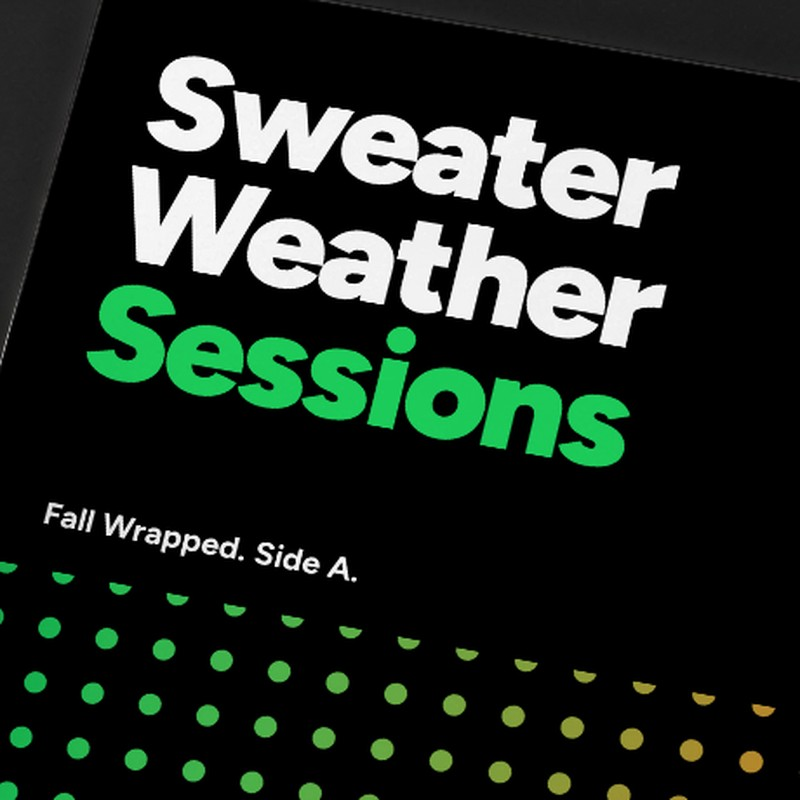
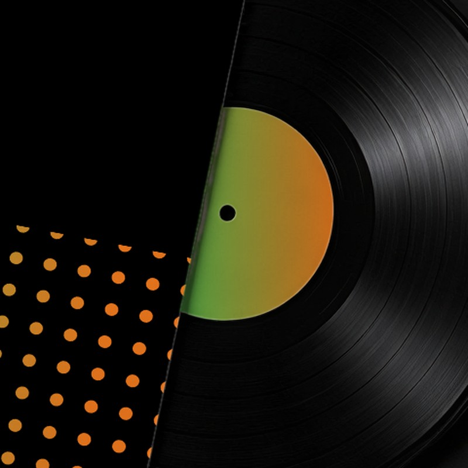

Fall Wrapped
Your autumn, on repeat.
On repeat
since
September
since
September
Spotify
Fall 2026
Spotify has no season. It sounds the same in July as it does in November. Fall Wrapped asks what happens when a brand made of streams starts making things you can hold.
The answer here is a record: a playlist pressed onto something you can hold.
Every fall, people make the same kind of playlist: cozy, a little sad, made for rain. Fall Wrapped gives that playlist a cover, a weight and a place on the shelf.
The palette stays Spotify's own black and green, with one orange borrowed from the season outside.
One piece: a 12-inch record called Sweater Weather Sessions. Turn the page for the sleeve, the record and the songs.
The dots on these pages are the same dots on the sleeve. Green where the season starts, orange where it ends.
Pages 1–2
The record

Sweater Weather Sessions
The sleeveA 12-inch sleeve in Spotify black. The title sits in heavy white type, stacked over three lines, with the last word in the same green as the play button. It is the only colour on the sleeve that comes straight from the app.
The lower half is a field of dots. They start green on the left and turn orange on the right, one shade at a time, the way the trees outside turn over a few weeks in October. No single dot is a gradient; the change only shows when you step back and look at all of them together.
Nothing else is printed on the front. No photo, no artist, no barcode. You know whose record it is from the colours alone, the same way you can spot a Spotify screen from across a room.
The back carries the track list in the app's own layout: the title first, a short line underneath, and nothing else.
Green to orange
The recordBlack vinyl, pressed at 33⅓. The centre label carries the same green-to-orange gradient as the dots on the sleeve, so the record and its cover read as one object, even when they are apart.
When the record spins, the colour on the label moves round and round: green, then orange, then green again. It is the closest a record can get to the repeat button, a season playing on a loop.
Side A is for the walk to class in the morning, when the air is cold and the light is low. Side B is for the walk home, when it is already dark at five and the street lights are on.
The record slides out of the sleeve to the right, the same direction you swipe to skip to the next song.
Side A
The songs- First Cold Morning
- Leaf Peeping
- Rain on the Window
- Walk to Class
- Sweater Weather
- Dark at Five
Each title is also a playlist in the app, so the record and the phone play the same autumn. Put the needle down at home, then pick up the same mood on the train.
The order follows one day in November, from the first cold morning to the walk home in the dark. Sweater Weather sits near the end, the one hour of the day when it finally feels warm.
Six songs a side, about twenty minutes each. Long enough for one cup of coffee, short enough that you turn the record over before it gets cold.